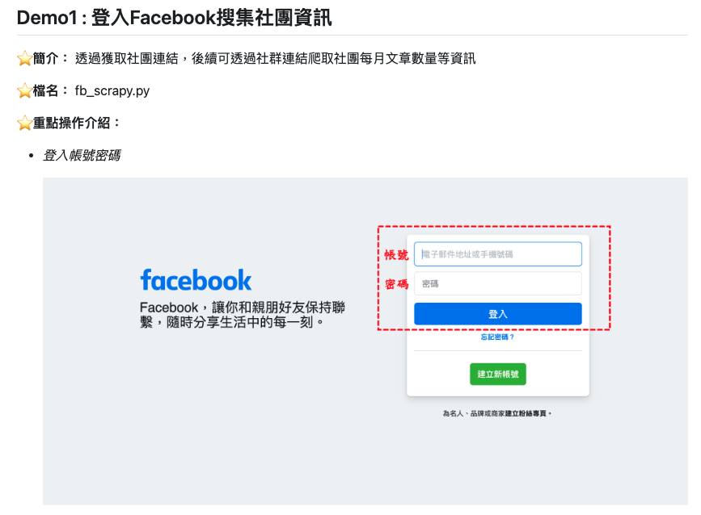

每日更新寵物產業資訊網頁平台
利用 Python 進行網路爬蟲，每日自動排程將資料匯入資料庫。 最後將資料利用amChart視覺化，利用 PHP 串接 MySQL 資料， 完成動態網頁設計與呈現。
資料來源 :
- 財政部稅籍(https://data.gov.tw/dataset/9400)
- 寵物食品申報網(https://petfood.coa.gov.tw/web/page-food.aspx)
- 特定寵物業管理(https://paim.coa.gov.tw/Web/BusinessList.aspx)
- 程式語言 : Python、PHP
- 網頁開發 : HTML、CSS、Boostrap、amChart
- 開發系統 : Ubuntu

使用Selenium模擬瀏覽器進行網路爬蟲
利用 Python 內的 Selenium 套件模擬人為操作瀏覽器的行為，如：滾動視窗、滑鼠點擊及登入帳密等操作，進行網頁資料的獲取。
爬取網站：Dcard、FB
- 程式語言 : Python
- 開發系統 : Ubuntu